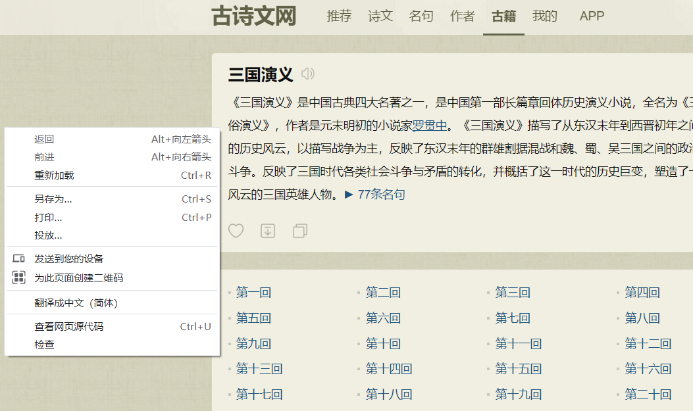
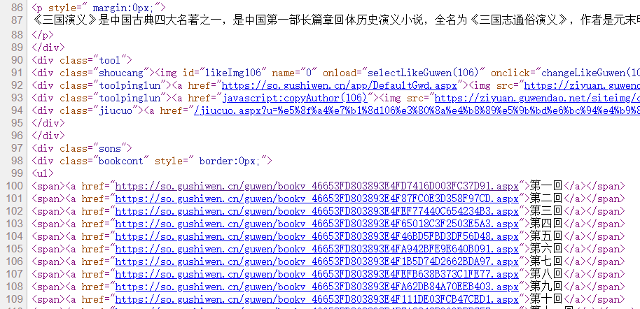
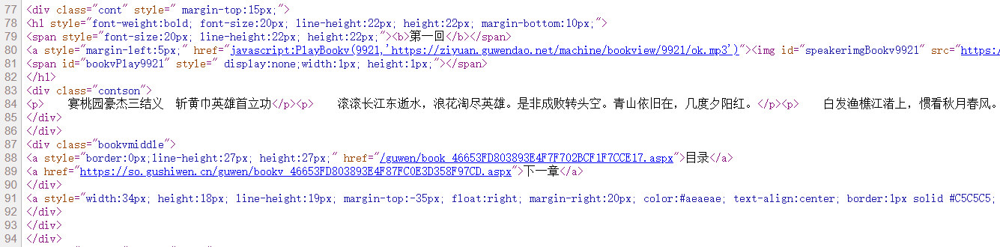
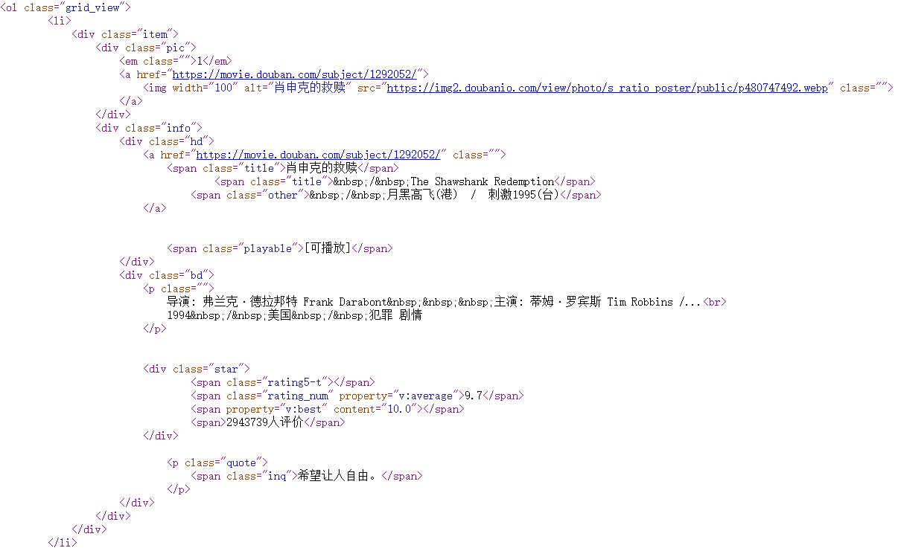
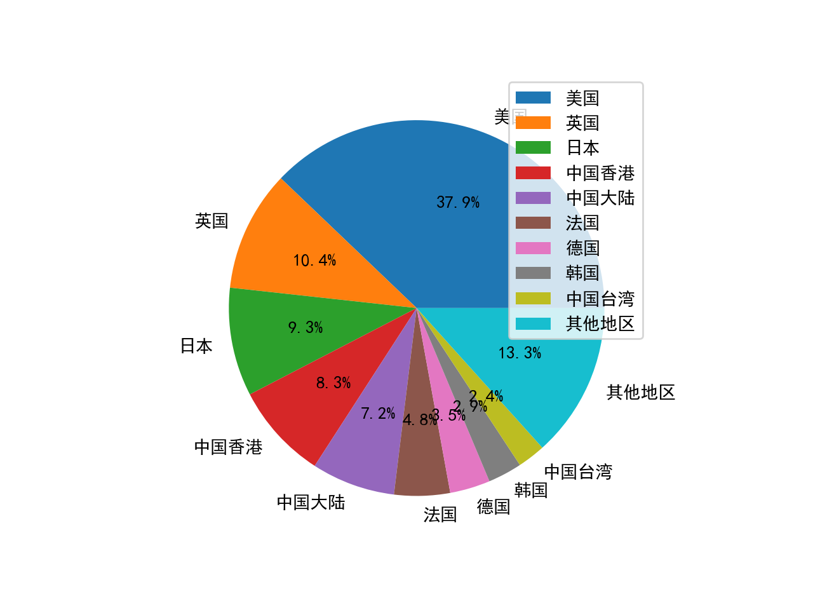
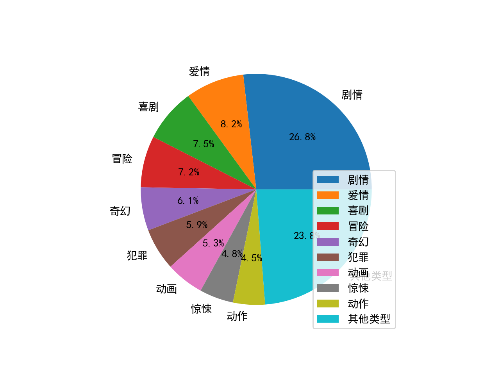
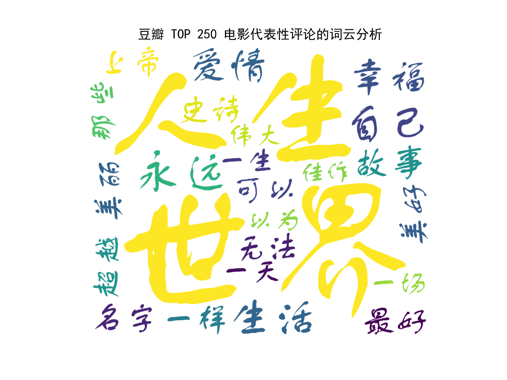
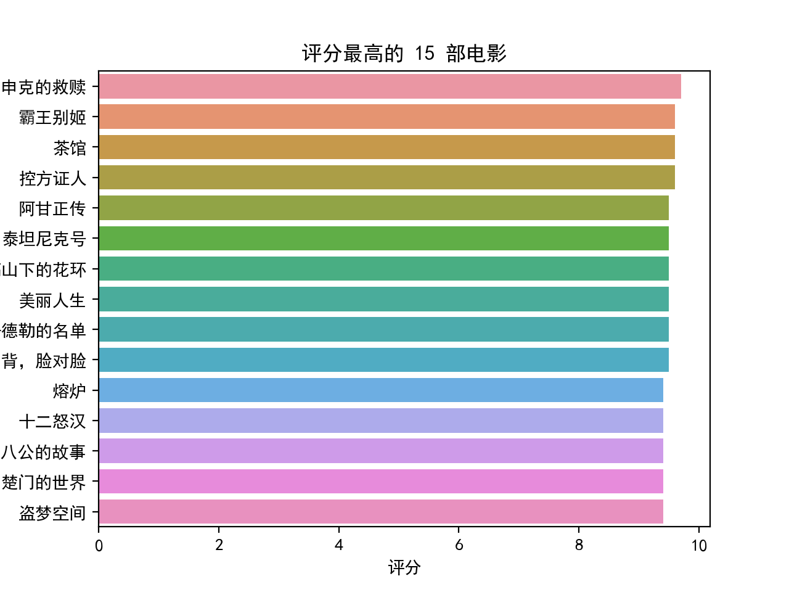
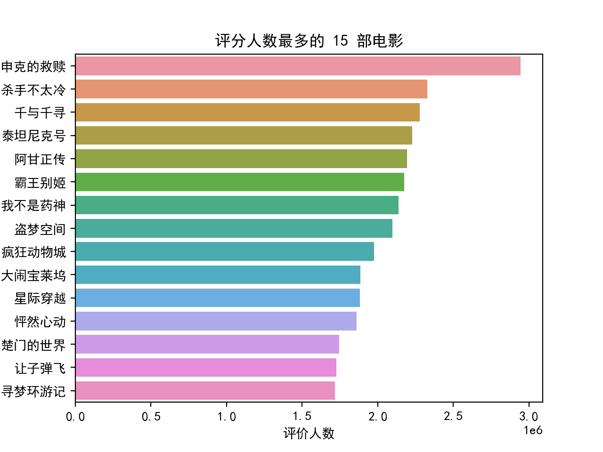
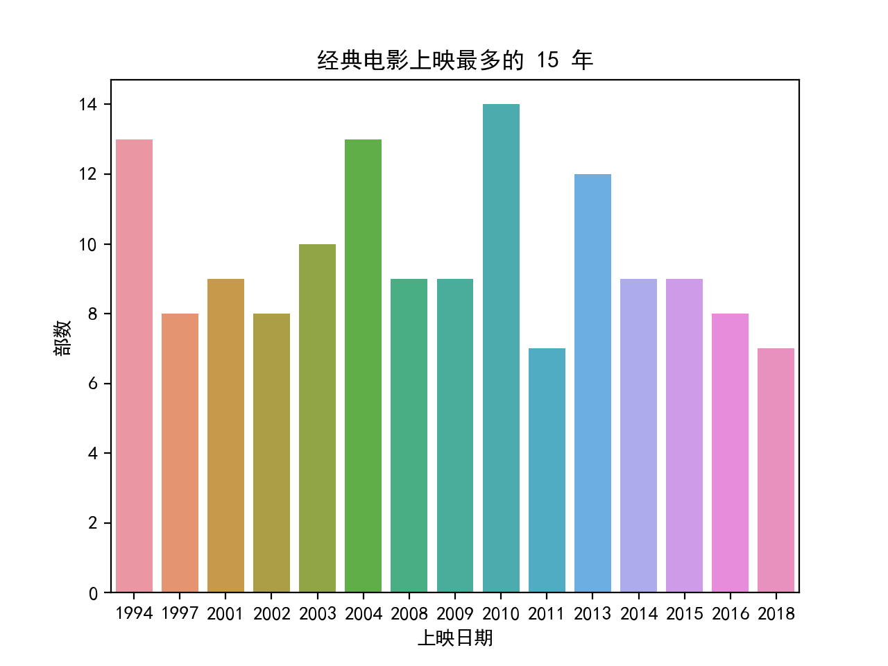

9. 爬虫入门#
Python 的爬虫功能使得程序员可以快速抓取并分析网页中的信息，它实质上是模拟浏览器访问网页。本章主要常用的两个爬虫相关的库requests，beautifulsoup4。若要模拟鼠标点击等，要用到selenium 库，限于篇幅限制，本章不再介绍，具体可以查阅相关资料。
9.1. requests 库#
每个网页都有源代码，可以通过鼠标单击右键查看网页源代码。网页中的很多信息都在源代码里面，requests 是一个访问网页源代码的库。一般通过 get 函数访问网页，另外一个常用来访问网页的函数是 post，与 get 函数的区别在于 post 能够传递表格或文件到网页所在服务器上。
| get(url, [timeout], [headers], [proxies], **kwargs) | |
|---|---|
| url | 网页链接 |
| timeout | 可选参数，请求网页的最大时长，单位为秒 |
| headers | 可选参数，模拟浏览器设置 |
| proxies | 可选参数，代理服务器设置 |
| **kwargs | 其他参数 |
get 或 post 函数返回一个 Resoponse 对象，该对象包括以下常用的属性或函数。
属性或函数 |
描述 |
|---|---|
status_code |
网页请求的返回状态，200 表示连接成功，404 表示连接失败 |
text |
响应网页的字符串内容 |
encoding |
响应网页的编码方式，可以更改 |
content |
相应网页的字节形式内容，例如图片或 pdf 文件等 |
raise_for_status() |
如果网页访问不成功，抛出异常，一般结合 try-except 语句使用 |
json() |
该函数可以解析网页内容中 JSON 格式的数据 |
import requests
r = requests.get('http://www.baidu.com')
r.status_code
200
r.text # 结果省略
r.encoding # 若为 ISO-8859-1 则中文为乱码
'ISO-8859-1'
r.encoding = 'utf-8' # 无论网页原内容是什么编码，都改成 utf-8 编码
9.2. beautifulsoup4库#
使用requests获取的网页源代码一般非常复杂，不仅包括常规内容，还包括很多定义页面格式的代码。
tips
网页中的内容一般在网页源代码的各个标签里
例如有下面的 html 代码：
html_doc = """
<html>
<body>
<h1>Hello, BeautifulSoup!</h1>
<ul>
<li><a class = "c1" href="http://example1.com">Link 1</a></li>
<li><a class = "c2" href="http://example2.org">Link 2</a></li>
</ul>
<div>
<p>text1</p> <p>text2</p>
</div>
</body>
</html>
"""
beautifulsoup4库提供了大量的属性或函数，能够方便地将网页（html）不同标签（tag）中的内容提取出来。常用的属性有下面几个：
属性 |
描述 |
|---|---|
head |
网页源代码中的 <head> 标签内容 |
title |
网页源代码中的 <title> 标签内容 |
body |
网页源代码中的 <body> 标签内容 |
p |
网页源代码中的第一个 <p> 标签内容 |
a |
网页源代码中的第一个 <a> 标签内容 |
div |
网页源代码中的第一个 <div> 标签内容 |
script |
网页源代码中的第一个 <script> 标签内容 |
from bs4 import BeautifulSoup
r = requests.get('http://www.baidu.com')
r.encoding = 'utf-8'
soup = BeautifulSoup(r.text) # 将网页内容传递给 BeautifulSoup 提取
soup.title
<title>百度一下，你就知道</title>
soup.p # html 语言中 p 标签表示一个文本段落
<p id="lh"> <a href="http://home.baidu.com">关于百度</a> <a href="http://ir.baidu.com">About Baidu</a> </p>
上面的这些标签对象还有自己的属性可以访问更具体的内容。
标签属性 |
描述 |
|---|---|
name |
标签名字，例如 a，p，div等 |
attrs |
标签的具体属性 |
contents |
第一个该标签下的所有内容，为列表形式 |
string |
第一个该标签或子标签下的文本内容，若标签中没有内容或者超过一层的子标签，则返回 None |
text |
第一个该标签下（包括子标签）的所有文本内容，若没有内容则返回空文本 |
soup.p.name
'p'
soup.p.attrs
{'id': 'lh'}
soup.p.contents
[' ',
<a href="http://home.baidu.com">关于百度</a>,
' ',
<a href="http://ir.baidu.com">About Baidu</a>,
' ']
soup.p.string
soup.p.text
' 关于百度 About Baidu '
将挖网页内容传递给 BeautifulSoup 提取时，还可以指定解析器，例如 ‘html.parser’, ‘lxml’, ‘xml’, ‘html5lib’。这些解析器各有利弊，其中 ‘lxml’ 解析速度最快。将上面的 html_doc 的网页文件传递给 BeautifulSoup：
soup2 = BeautifulSoup(html_doc, 'lxml') # 或者 soup2 = BeautifulSoup(html_doc, features = 'lxml')
soup2.ul.text
'\nLink 1\nLink 2\n'
type(soup2.ul.string) # 文本内容嵌套超过一层，返回 None
NoneType
soup2.li.contents # html 语言中 a 标签是超链接，ul 与 li 标签表示一个无序列表
[<a class="c1" href="http://example1.com">Link 1</a>]
soup2.ul.li.text # 标签通过逗点套子标签
'Link 1'
9.2.1. 函数findall()，find()#
当需要列出同一类标签对应的所有内容时，需要用到 BeautifulSoup 中的 findall() 函数。
| find_all([name], [attrs], [string], [limit], **kwargs) | |
|---|---|
| name | 标签名字 |
| attrs | 按照标签的具体属性检索, 采用 class_= 形式或 JSON 格式等 |
| string | 按照关键字检索，采用 string= 形式，返回与关键字完全匹配的字符串 |
| limit | 返回结果的个数，默认返回所有结果 |
| **kwargs | 其他参数 |
还有一个函数find()，与findall()的区别在于find()只寻找第一个对应标签的内容。还有一个函数find_next()，可以查找标签的下一个标签。类似的检索函数还有select，本书不再赘述。
soup2.find_all('a') # 检索出网页中所有的 a 标签
[<a class="c1" href="http://example1.com">Link 1</a>,
<a class="c2" href="http://example2.org">Link 2</a>]
soup2.find_all('a', class_ = 'c1')
[<a class="c1" href="http://example1.com">Link 1</a>]
soup2.find_all(class_ = 'c1') # 参数中可以没有标签名字
[<a class="c1" href="http://example1.com">Link 1</a>]
soup2.find_all(string = 'Link') # 关键词检索
[]
9.2.2. 函数get()#
通过函数get可以访问标签的具体属性，例如 class 类型，具体超链接等。
soup2.a.get('class')
['c1']
soup2.a.get('href')
'http://example1.com'
import re # 导入正则表达式库
soup2.find_all(string = re.compile('Link')) # 通过正则表达式将所有包含 Link 的字符串都检索出来
['Link 1', 'Link 2']
Note
正则表达式是计算机科学中用来描述字符串的一种表达式。正则表达式定义一个字符串表达规则，只要字符串满足这个规则，就算则匹配。可以通过字符串结合符号 .*?<=()[]{}\d\w 等定义多种表达规则，并结合函数findall(),search(),match()等检索字符串，具体可以进一步查阅相关资料。
正则表达式中：
. 匹配任意一个字符
* 匹配 0 个或多个表达式
+ 匹配 1 个或多个表达式
? 匹配 0 个或1个前面定义的正则表达式片段，非贪婪方式
\s 表示匹配任意空白字符
\S 表示匹配任意非空字符
\d 表示匹配任意数字
-\D 表示匹配任意非数字
^ 匹配一行字符串的开头
{n} 精确匹配前面的 n 个表达式
BeautifulSoup 另外一个常用的获取文本内容的函数为get_text。与直接使用标签的属性 text 相比，get_text 更加灵活，能够方便地实现文本换行。它的一般用法为：
| get_text([separator=''], [strip=False], **kwargs) | |
|---|---|
| separator | 各标签下文本的分隔符 |
| strip | 是否去掉各标签文本的前后空格 |
| **kwargs | 其他参数 |
soup2.div.text # html 语言中 div 标签表示网页中的一个区域
'\ntext1 text2\n'
soup2.div.get_text()
'\ntext1 text2\n'
soup2.div.get_text(separator = '\n')
'\n\ntext1\n \ntext2\n\n'
soup2.div.get_text(separator = '**')
'\n**text1** **text2**\n'
soup2.div.get_text(strip = True)
'text1text2'
9.3. 爬虫实例 1：抓小说#
下面，我们举例如何用爬虫抓取网上的《三国演义》小说，并将每回的内容下载到电脑里。
首先，找到一个包含《三国演义》小说的网站，本例中，使用了古诗文网：https://so.gushiwen.cn/guwen/book_46653FD803893E4F7F702BCF1F7CCE17.aspx
然后，在网页的空白处，单击鼠标右键，查看网页源代码：

网页的源代码大致如下：

我们发现每一回的链接在网页中的标签 ul 里面，具体在其每个子标签 span 中的子标签 a 里面。
打开其中任一回的链接，在网页空白处单击右键，查看网页源代码：

我们发现每一回的内容在具体属性为 class=’contson’ 的 div 标签里，其中第一句为每一回的标题，而之后的内容为正文。
根据网页的以上两个特点，设计 Python 的爬虫代码如下。
import requests # 联系网络的包，a package for requesting from websites
from bs4 import BeautifulSoup # 分析网页数据的包，a package for webstie data analysis
import time
import random
import os
# 获取单个网页信息
def get_url_content(url):
# headers = {
# 'user-agent': 'Mozilla/5.0 (Windows NT 10.0; Win64; x64) AppleWebKit/537.36 (KHTML, like Gecko) Chrome/74.0.3729.108 Safari/537.36'
# } # 主要是模拟浏览器登录，防止反爬，一般的网站没有这个也行，谷歌浏览器 按 F12 能够找到网站支持的 headers
r = requests.get(url, timeout=30) # 获取网页的内容，并返回给r变量，timeout 为超时时间
# r.raise_for_status() # 检查返回网页的内容的状态码，200表示成功
# r.encoding = r.apparent_encoding # 统一编码方式
return r.text # 返回网页中的文本内容，数据内容为 r.content
# 解析出网页中想要的信息，爬虫的关键步骤
def filter_info(chapter_num, url_text):
soup = BeautifulSoup(url_text, "lxml") # 解析网页返回内容，lxml 是一个解码方式，效率比较快，被推荐使用
contents = soup.find('div', class_='contson')
# 使用 get_text 可以实现网页里面 p 标签中文本内容的换行，而 text 不能
chapter_title = contents.find('p').get_text() # 第一句话是本回的标题
chapter_title = '第' + str(chapter_num) + '回 ' + chapter_title.lstrip()
# chapter_content = contents.get_text(separator="\n") # find 返回的不是列表，不用跟 [0]
chapter_content = contents.text
chapter_content = chapter_content.lstrip() # 去掉字符串左边的空字符
this_chapter = [chapter_title, chapter_content]
return this_chapter
# 从网页中找到每一回的链接
def get_url_links(url_head_content):
soup = BeautifulSoup(url_head_content, "lxml") # 解析网页返回内容，lxml 是一个解码方式，效率比较快，被推荐使用
# links = soup.find('div', class_='bookcont') # 每一回的链接都在类 span 里面
links = soup.find('ul') # 每一回的链接都在类 ul 里面
links = links.findAll('span')
link_list = []
for each in links:
link_list.append(each.a.get('href')) # 获取每一回的链接，存储到列表里
return link_list
# 将每章内容输出到 txt 文档里
def write_txt(string_array):
file_address = 'E:/三国演义/' # txt 存放地址
if not os.path.exists(file_address): #用os库判断对应文件夹是否存在
os.makedirs(file_address) #如果没有对应文件夹则自动生成
file_name = string_array[0]
with open(file_address + file_name + '.txt', 'w', encoding='utf-8') as f: # 必须跟解码形式，不然有的网页中文内容写不到txt里
f.write(string_array[1])
# 主函数
def main():
url = 'https://so.gushiwen.cn/gushi/tangshi.aspx' # 古诗文网三国演义网址
url_head_content = get_url_content(url) # 获取网页
links = get_url_links(url_head_content) # 获取每一回的链接地址
# enumerate() 函数用于将一个可遍历的数据对象(如列表、元组或字符串)组合为一个索引序列
# 同时列出数据下标和数据
for index, each in enumerate(links):
url_link_content = get_url_content(each) # 获取每一回的网页内容
chapter_content = filter_info(index + 1, url_link_content) # 解析每一回的网页内容，获取小说文本
write_txt(chapter_content) # 输出小说内容到 txt
time.sleep(random.random() * 1) # 每抓一个网页休息0~1秒，防止被反爬措施封锁 IP
# 运行函数
main()
其中，使用 requests 库时，有的网站需要设置 headers 参数才能正确模拟浏览器登录。headers 参数可以在打开网页时，按键盘F12 打开， 然后刷新一下网页，单击F12弹出窗口的任何一个文件，就能查看网站的所有 headers 信息，有 cookie，user-agent 等信息。如下图所示：

我们可以复制一部分信息或全部信息，放到 request 函数的 headers 参数里面。
9.4. 爬虫实例 2：抓豆瓣 top 250 的电影信息#
我们想获取豆瓣高分评价的 250 部电影的信息：电影名字，导演，上映年代，评分，评分人数等。打开豆瓣 top 250 的网页链接 https://movie.douban.com/top250?start= ，发现每个网页显示 25 部电影，一共有 10 个挖网页，网页地址与链接中的 start = 后面的数字有关。例如第 3 个子网页的链接地址是 ‘https://movie.douban.com/top250?start=50 ，根据这个规律，我们可以用一个 for 循环，将 10 个网页分别打开抓取信息。
打开一个网页，单击右键查看网页源代码，如下图所示：

通过源代码发现以下几个特点：
每部电影的信息都在标签 <div class=’item’> 里面。据此，我们可以用一个 for 循环，将每个网页的 <div class=’item’> 标签都检索出来
电影的中英文名字都在标签 <div class=’title’> 里，而其他名字在标签 <div class=’other’> 里。我们可以使用函数
find()以及find_next()检索出来。导演，主演，上映年代，电影产地，电影类型信息在标签 <p class=’’> 里。我们可以使用函数
find()检索，然后利用正则表达式将里面对应文本信息分别提取出来。评分信息在标签 <div class=’rating_num’> 里。我们可以使用函数
find()检索出来。评分人数信息在标签 <span> 里。我们可以通过函数
find()结合关键字’评价’检索出来。（网页中的 < span > 提供了一种将文本的一部分或者文档的一部分独立出来的方式）代表性评价信息在标签 <div class=’quote’> 里。我们可以使用函数
find()检索出来。
根据以上的特点，设计出以下的 python 代码。其中中文分词库jieba，词云库WordCloud库等，若没有安装，需要提前安装（使用 pip 或 conda 安装）到电脑上。
在画图时，使用 matplotlib 画出饼图，使用 WordCloud 生成词云图，因为 matplotlib 不能自动将不同柱子分配不同的颜色，使用 seaborn 画出柱状图。
import requests # 联系网络的包，a package for requesting from websites
import pandas as pd
from bs4 import BeautifulSoup # 分析网页数据的包，a package for webstie data analysis
import matplotlib.pyplot as plt # 画图的包
import time
import random
import jieba # 中文分词包
from wordcloud import WordCloud # 词云包
import re # 正则表达式包
import seaborn as sns # 用 seaborn 画柱状图
plt.rcParams['font.sans-serif'] = ['SimHei']
# 主要是模拟浏览器登录，防止反爬
headers = {
'user-agent':'Mozilla/5.0 (Windows NT 10.0; Win64; x64) AppleWebKit/537.36 (KHTML, like Gecko) Chrome/74.0.3729.108 Safari/537.36'
}
## store the information
rank_list = []
name_list = [] # 用来存储电影名字的一个二维列表
director_list = [] # 用来存储导演名字的一个列表，下面几个变量类似
actor_list = []
year_list = []
rating_list = []
ratingNum_list = []
quote_list = []
place_list = []
category_list = []
num = 0
for i in range(0, 10):
link = 'https://movie.douban.com/top250?start=' + str(i*25) # 250部电影一共 10个网页， 10 pages for total 250 movies
res = requests.get(link, headers = headers, timeout = 10)
time.sleep(random.random()*3) # 每抓一个网页休息2~3秒，防止被反爬措施封锁 IP，avoid being blocked of the IP address
# res.text is the content of the crawler
soup = BeautifulSoup(res.text, "lxml") # lxml 是一个解码方式，lxml is one decoding model for Beautifulsoup
movie_list = soup.find_all('div', class_ = 'item') # 检索所有类型为 item 的 div 标签
for each in movie_list:
# 排名在 em 标签里
rank = each.em.text
rank_list.append(rank)
# 电影名字在标签 <span class="title"> 与 <span class="other"> 里
other_name = each.find('span', class_ = 'other').get_text()
other_name = other_name.replace(' ', '') # 去掉空格
other_name = other_name.replace('\xa0/\xa0', '') # 去掉多余字符 \xa0/\xa0
cn_name = each.find('span', class_ = 'title').get_text()
eg_name = each.find('span', class_ = 'title').find_next().get_text() # find_next() 查找满足条件的下一个标签
eg_name = eg_name.replace('\xa0/\xa0', '') # 去掉多余字符 \xa0/\xa0
name_list.append([cn_name, eg_name, other_name])
# 评分信息在标签 <span class="rating_num"> 里
rating = each.find('span', class_ = 'rating_num').get_text()
rating_list.append(float(rating))
# 评价人数通过关键词'评价'检索
rating_num = each.find(string = re.compile('评价')).get_text()
rating_num = rating_num.replace('人评价', '')
ratingNum_list.append(int(rating_num))
# 代表性评价在 <p class="quote"> 里
try:
quote = each.find('p', class_ = 'quote').get_text()
except Exception: # 有的电影代表性评价没有显示
quote = ''
quote_list.append(quote)
info = each.p.get_text(strip = True)
# 定义正则表达式提取出导演，主演，上映时间，地点，电影类型信息
try:
# (?<=导演: ) match any character begins after character '导演: '
# .*? match any character (.), zero or more times (*) but as less as possible (?)
# (?=主) match any character before character '主'
director = re.compile('(?<=导演: ).*?(?=主)').findall(info)[0]
actor = re.compile('(?<=主演: ).*?(?=/)').findall(info)[0]
except Exception: # 有的电影导演名字太长，主演没有显示出来
director = re.compile('(?<=导演: ).*?(?=\xa0)').findall(info)[0]
actor = ''
director_list.append(director)
actor_list.append(actor)
# \d{4} is a four digit number
year = re.compile('(?<=...)\d{4}').findall(info)[0]
year_list.append(year)
place_category = re.compile('(?<=\xa0/\xa0).*').findall(info)[0]
place_category = place_category.replace('\xa0', '')
place_category = place_category.split('/')
place = place_category[0]
category = place_category[1]
place_list.append(place)
category_list.append(category)
# 将数据存到 pandas 里
df = pd.DataFrame(rank_list, columns = ['排名'])
df['电影名字'] = [i[0] for i in name_list]
df['外文名字'] = [i[1] for i in name_list]
df['其他名字'] = [i[2] for i in name_list]
df['评分'] = rating_list
df['评价人数'] = ratingNum_list
df['导演'] = director_list
df['主演'] = actor_list
df['上映日期'] = year_list
df['地区'] = place_list
df['类型'] = category_list
df['代表性评论'] = quote_list
# 导出到 xls 文件里，save to xls file
df.to_csv('豆瓣 top 250 电影爬虫抓取.csv')
# 分析电影来源地并画饼图
locations = []
for i in range(len(place_list)):
nations = place_list[i].split(' ')
for j in range(len(nations)):
if nations[j] == '西德':
nations[j] = '德国'
locations.append(nations[j])
df_location = pd.DataFrame(locations, columns = ['地区'])
# 按照出现次数排序, size() 可以查数，生成一个 Series 类型
# 然后用 reset_index 重新命名，参数为 name
# DataFrame 类型的 reset_index 参数为 names
df2 = df_location.groupby('地区').size().reset_index(name='counts') # df2 = df2['地区'].value_counts(ascending = False).reset_index()
df2.sort_values(by = 'counts', ascending = False, inplace = True, ignore_index = True)
# 画饼状图
values = []
labels = []
other_count = 0
for i in range(9):
values.append(df2['counts'][i])
labels.append(df2['地区'][i])
for i in range(9, df2.shape[0]):
other_count += int(df2['counts'][i])
values.append(other_count)
labels.append('其他地区')
plt.figure(1)
plt.pie(values, labels=labels, autopct='%.2f%%')
plt.legend() # 显示标签
plt.show()
# 分析电影类型并画饼图
categories = []
for i in range(len(category_list)):
category = category_list[i].split(' ')
for j in range(len(category)):
categories.append(category[j])
df_category = pd.DataFrame(categories, columns = ['类型'])
df3 = df_category.groupby('类型').size().reset_index(name='counts')
df3.sort_values(by = 'counts', ascending = False, inplace = True, ignore_index = True)
values = []
labels = []
other_count = 0
for i in range(15):
values.append(df3['counts'][i])
labels.append(df3['类型'][i])
for i in range(15, df3.shape[0]):
other_count += int(df3['counts'][i])
values.append(other_count)
labels.append('其他类型')
plt.figure(2)
plt.pie(values, labels=labels, autopct='%.2f%%')
plt.legend()
plt.show()
# 画词云图
jieba.add_word('久石让')
jieba.add_word('谢耳朵')
# 一些语气词和没有意义的词
del_words = [ '就是', '一个', '被', '电影', '我们',
'不是', '每个', '不会', '没有',
'这样', '那么', '不要', '如果',
'不能', '一种', '不过', '只有', '不得不',
'不得不', '一部']
all_quotes = ''.join(quote_list) # 将所有代表性评论拼接为一个文本
# 去掉标点符号
all_quotes = re.sub(r"[0-9\s+\.\!\/_,$%^*()?;；:-【】+\"\']+|[+——！，;:。？、~@#￥%……&*（）]+", " ", all_quotes)
words = jieba.lcut(all_quotes)
words_final = []
for i in range(len(words)):
if len(words[i]) > 1 and words[i] not in del_words: # 去掉一些语气词，单字词
words_final.append(words[i])
text_result = Counter(words_final)
cloud = WordCloud(
font_path = 'C:\Windows\Fonts\FZSTK.TTF', # 中文字体地址 C:\Windows\Fonts\FZSTK.TTF，提前下载字体或指定，否则中文无法显示
# mask = '' 通过 mask 参数指定一个图片地址作为词云的背景图像
background_color = 'white',
width = 1000,
height = 860,
max_words = 25
)
#wc = cloud.generate(words) # 这种方法对中文支持不太好，this mehtod is better for only english string
wc = cloud.generate_from_frequencies(text_result)
wc.to_file("豆瓣 TOP 250 词云.jpg")
plt.figure(3)
plt.imshow(wc)
plt.axis('off')
plt.title('豆瓣 TOP 250 电影代表性评论的词云分析')
plt.show()
# 评分最高的 15 部电影
# 用 seaborn 画柱状图，因为自动将不同柱子分配不同的颜色
df_star = df.sort_values(by = '评分', ascending = False, ignore_index = True)
number = 15
df_star_top = df_star.head(number)
plt.figure(4)
sns.barplot(data = df_star_top, y = '电影名字', x = '评分', orient = 'h')
plt.title('评分最高的 ' + str(number) + ' 部电影')
plt.show()
# 评分人数最多的 15 部电影
df_num = df.sort_values(by = '评价人数', ascending = False, ignore_index = True)
df_num_top = df_num.head(number)
plt.figure(5)
sns.barplot(data = df_num_top, y = '电影名字', x = '评价人数', orient = 'h')
plt.title('评分人数最多的 ' + str(number) + ' 部电影')
plt.show()
# 电影年代画图
df_year = df.groupby('上映日期').size().reset_index(name = '部数')
df_year.sort_values('部数', ascending = False, inplace = True)
df_year_top = df_year.head(20)
df_year_top.sort_values('上映日期', inplace = True)
plt.figure(6)
sns.barplot(data = df_year_top, x = '上映日期', y = '部数')
plt.title('电影上映年代')
plt.show()
生成的图形如下：
     
9.5. 后记#
不同的网站的爬虫技巧经常不一样，要具体网站具体分析。
由于一些网站经常更新数据的存储地址或源代码，某段时间的爬虫代码可能在下一个时间段就不能用了，爬虫代码也要更新。
有的网页信息并不在网站直接打开的网页源代码里（例如弹幕、电商评论等），还要结合按键
F12找到网页信息的真实地址。提取网页信息时，经常要用到正则表达式处理字符串。
近年来，许多网站都提高了反爬手段防止网站的数据被无端获取。因此，提醒读者避免过度使用爬虫，给一些网站造成不必要的访问负担。
9.6. 练习#
Exercise 9.1
练习从网上抓取一首诗词。
Exercise 9.2
练习抓取学校的新闻，并尝试画出词云图。
Exercise 9.3
尝试用爬虫下载小说《红楼梦》到电脑里。